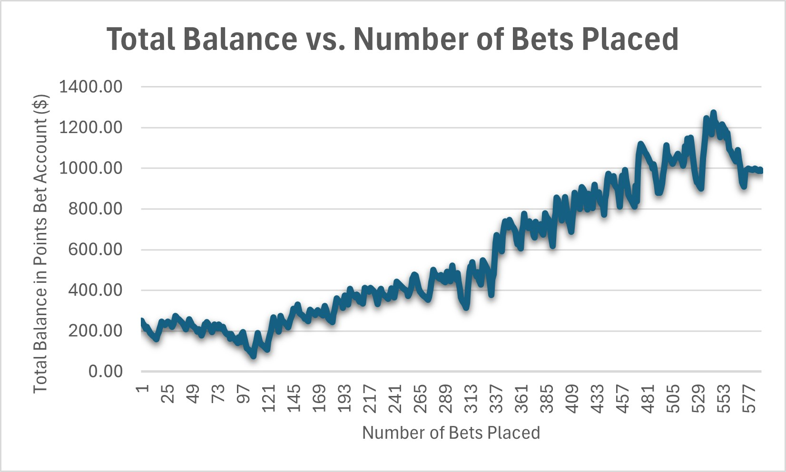

About Me
I am a biostatistician at Medpace working on clinical trials, with a focus on early-phase oncology and phase-III adaptive designs. My expertise spans statistical learning, predictive modeling, and R package development.
I blend rigorous statistical methods with modern machine learning approaches to tackle complex problems across various domains, from clinical research and microbiome analysis to sports analytics and customer behavior modeling.
Featured Research
lgspline Package
An R package that implements a novel formulation of smoothing splines through constrained optimization. This approach provides direct access to predictor-response relationships through interpretable coefficients, unlike other formulations that require post-fitting algebraic manipulation.
Citation: Davis, M. (2025). lgspline: Lagrangian Multiplier Smoothing Splines. R package version 0.2.0. https://CRAN.R-project.org/package=lgspline
Rank Normalization for Microbiome Data
A statistical framework for differential abundance analysis in microbiome data that uses rank normalization paired with a t-test. This method provides strong control over the false discovery rate while maintaining good statistical power, especially with larger sample sizes.
Citation: Davis ML, Huang Y, Wang K. Rank normalization empowers a t-test for microbiome differential abundance analysis while controlling for false discoveries. Briefings in Bioinformatics. 2021;22(5):bbab059.
DOI: 10.1093/bib/bbab059
PhD Dissertation
My dissertation research focused on developing novel statistical approaches for complex biological data, including smoothing spline methods and techniques for microbiome analysis.
Citation: Davis, M.L. (2023). Thompson Sampling with Smoothing Splines for Hyperparameter Optimization: A Tuning Algorithm that Doesn't Need Tuning. University of Iowa, PhD Dissertation.
Featured Projects
Time to Churn

A survival analysis framework applied to business data to predict customer churn and evaluate the effectiveness of email interventions. This project uses real data from a friend's growing subscription-based business, applying a Weibull Accelerated Failure Time (AFT) model implemented through my lgspline R package.
The system provides predicted time-to-churn based on customer attributes and interactions, identifies the most important predictors of churn, and generates statistically rigorous interpretations of the factors influencing customer retention.
A key feature is an automated recommendation engine that suggests optimal interventions for individual customers based on their specific characteristics, leveraging posterior draws from the model to maintain the statistical properties of randomized experiments while improving over pure random assignment. This showcases the versatility of survival smoothing splines for various business applications.
MNIST with a Twist

While MNIST is almost a cliché in machine learning, this project adds a novel (literal) twist by conditioning a Variational Autoencoder (VAE) on both digit identity and rotation angle as numeric vectors appended to the latent space. This approach tests whether neural networks can truly learn abstract concepts like "rotation" rather than simply memorizing training examples.
The conditional VAE encodes MNIST digits into a latent space where rotation becomes a manipulable variable, allowing for the generation of new rotated versions of input digits. This project also served as an opportunity to experiment with the Azure ML pipeline for model training and deployment.
While the model performs well within its training distribution, it struggles to generalize rotation beyond the specific angles seen during training, demonstrating both the capabilities and limitations of deep generative models in learning abstract transformations from data.
To Make an Adversary Inadmissible

A statistical approach to sports betting that leverages historical Vegas betting lines to form prior distributions. The key insight is using Vegas's own historical over/under predictions as a powerful prior distribution - a quantification of their expert knowledge - and combining this with a stacked machine learning model as a likelihood function.
During the 2022-2023 NBA regular season, this methodology generated over $700 in profit across hundreds of small bets by identifying market inefficiencies where Vegas odds diverged from my posterior predictive distributions. The system essentially turns Vegas's own expertise against itself by leveraging their historical accuracy.
The automated pipeline pulls fresh NBA data each morning, updates the models, and outputs decision spreadsheets identifying favorable betting opportunities based on current Vegas lines, placing bets only when both models (Gaussian mixture and quasi-Poisson) agree that the expected profit is positive.
Education & Experience
Education
Work Experience
- Lead statistical and programming activities for assigned projects and train new analysts
- Contribute to clinical development plan preparation
- Develop Data Analysis Plans for assigned projects
- Review study protocols and identify appropriate statistical methodologies
- Program study analyses, review study results, and prepare statistical methods sections for reports
- Communicate project requirements for CRF design, database design, and database cleanup to ensure that key study variables are suitable for analysis
- Communicate statistical results to medical writing personnel to ensure accurate interpretation
- Served as head instructor of an online introductory biostatistics course for non-statisticians, including nurses, epidemiologists, undergraduate biology majors, and physicians
- Designed presentations, assignments, projects, exams, and lectures
- Educated non-statistical audiences on fundamental statistical theory, including regression, hypothesis testing, and Bayesian methods
- Analyzed undergraduate student data to help faculty learn about student behaviors and professors develop more effective teaching strategies
- Constructed PowerBI dashboards to assist faculty in understanding the behaviors of their students
- Applied statistical and machine learning methods to generate insights from big datasets
- Used SQL and API queries to gather data from online sources
- Collaborated as the sole statistician with a diverse team of non-statisticians including social workers and other researchers
- Compared the effectiveness of social work interventions using contingency table analyses
- Designed questionnaires for understanding the sentiments of participants pre- versus post-interventions
- Wrote SAS macros to automate the simultaneous generation of tabular data
- Prepared and organized data specifications for the Chicago Multicenter AIDS Cohort Study
- Produced summary statistics in R, data cleaning in excel, and visualizations using Circos plots
- Performed regression analyses relating cohort demographics to clinically relevant outcomes
- Recorded, entered, and verified the validity of raw, level-I data in an online biomedical database
Contact
I'm always interested in collaborations, discussions, and opportunities to apply statistical methods to interesting problems. Feel free to reach out!
- Email: matthewlouisdavis@gmail.com
- GitHub: matthewlouisdavisBioStat
- LinkedIn: matthew-davis-23302318